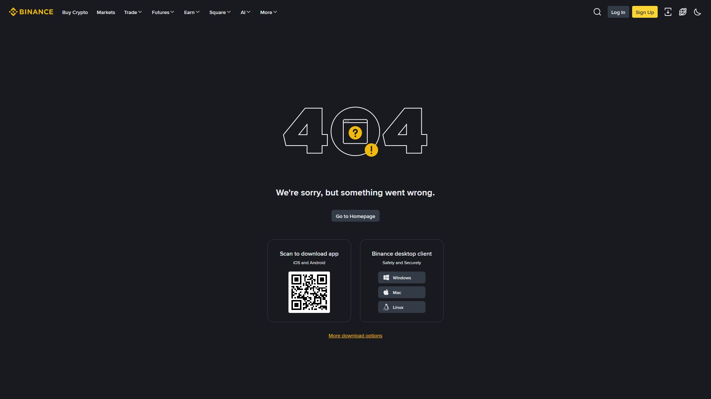

کرپٹو ڈیپازٹ = کسی دوسرے ایکسچینج یا والٹ سے بائننس کے Spot Wallet میں کرپٹو منتقل کرنا۔ یہ عمل آسان دکھتا ہے، مگر ایک غلط نیٹ ورک یا غلط Memo آپ کا فنڈ ہمیشہ کے لیے ضائع کر سکتا ہے۔ یہ باب آپ کو ہر قدم احتیاط سے سکھائے گا۔

Wallet → Deposit → کرپٹو منتخب کریں → نیٹ ورک منتخب کریں → ایڈریس + Memo💡 بائننس اب ڈیپازٹ Spot Wallet میں کرتا ہے (پرانے Funding Wallet کا تصور متروک ہے)۔
| عنصر | اہمیت |
|---|---|
| صحیح Coin | غلط کوائن = ضائع |
| صحیح Network | سب سے اہم چیک |
| ایڈریس | بائننس کا فراہم کردہ |
| Memo/Tag | بعض کوائنز میں لازمی |
| کم از کم مقدار | Minimum Deposit سے کم قبول نہیں |
یہ سب سے اہم نکتہ ہے۔ بھیجنے والا اور وصول کرنے والا نیٹ ورک بالکل ایک جیسا ہونا چاہیے۔
| نیٹ ورک | خصوصیت | فیس |
|---|---|---|
| TRC20 | تیز، سستا، نہایت مقبول | بہت کم |
| BEP20 | BNB Chain، سستا | بہت کم |
| ERC20 | Ethereum، معیاری مگر مہنگا | زیادہ |
| Polygon/دیگر | دستیابی دیکھیں | متغیر |
| کرپٹو | نیٹ ورک |
|---|---|
| BTC | Bitcoin (خود)، بعض اوقات BEP20 ورژن |
| ETH | ERC20 (Ethereum) |
⚠️ مثال: اگر آپ کسی ایکسچینج سے USDT TRC20 بھیجیں اور بائننس میں ERC20 منتخب کریں، تو فنڈ وصول نہیں ہوگا اور واپسی مشکل/ناممکن ہو سکتی ہے۔
Memo / Tag / Destination Tag = بعض نیٹ ورکس پر وصول کنندہ کی شناخت کے لیے اضافی کوڈ۔ بغیر اس کے ڈیپازٹ نہیں پہنچتا۔
| کوائن | Memo/Tag | نوع |
|---|---|---|
| XRP | ✅ لازمی | Destination Tag |
| XLM | ✅ لازمی | Memo |
| ATOM (Cosmos) | ✅ لازمی | Memo |
| BNB (BEP2 چین) | ✅ لازمی | Memo |
| USDT (TRC20/ERC20) | ❌ نہیں | — |
| BTC / ETH | ❌ نہیں | — |
XRP Deposit
Address : rN7n7otQDd6...HMfHgFj
Tag : 123456789 ← لازمی!
اگر Tag غلط/خالی → فنڈ گمشدہ ہو سکتا ہے💡 قاعدہ: اگر بھیجنے والی جگہ Memo/Tag مانگے، تو بائننس کے فراہم کردہ Memo کو بالکل ویسا ہی درج کریں۔
Confirmation = بلاک چین پر منتقلی کی تصدیق۔ جتنی زیادہ Confirmations، اتنا محفوظ، اور اتنا وقت۔
| کرپٹو | عام مدت |
|---|---|
| BTC | 10–60 منٹ (نیٹ ورک پر منحصر) |
| ETH / ERC20 | چند منٹ |
| BEP20 | چند منٹ |
| TRC20 | 1–3 منٹ |
| XRP | بہت تیز |
⚠️ یہ اوقات متغیر ہیں — نیٹ ورک کے بوجھ کے مطابق بدلتی رہتی ہیں۔
Wallet → Transaction History (یا Deposit History)
→ Pending (تصدیق جاری)
→ Completed ✅ → Spot Wallet میں موصول| مسئلہ | حل |
|---|---|
| نیٹ ورک مصروف | انتظار کریں |
| Confirmations کم | مزید انتظار |
| غلط نیٹ ورک | فوری بائننس سپورٹ سے رابطہ (TxID کے ساتھ) |
| نیچے Minimum | واپسی درکار ہو سکتی ہے |
💡 TxID (Transaction ID) = ہر منتقلی کا منفرد شناختی نمبر۔ یہ سپورٹ سے رابطے کے لیے سب سے اہم ثبوت ہے۔
مرحلہ 1: Wallet → Deposit کھولیں
مرحلہ 2: کوائن منتخب کریں (مثلاً USDT)
مرحلہ 3: صحیح نیٹ ورک منتخب کریں (مثلاً TRC20)
مرحلہ 4: ایڈریس (اور Memo اگر ہو) کاپی کریں
مرحلہ 5: بھیجنے والی جگہ پر ایڈریس پیسٹ کریں، نیٹ ورک یکساں رکھیں، بھیجیں
مرحلہ 6: TxID محفوظ رکھیں اور بائننس پر موصول ہونے کا انتظار کریں
مرحلہ 7: پہلی بار چھوٹی رقم بھیجیں — تصدیق کے بعد بڑی رقم
💡 پہلا ٹیسٹ ہمیشہ چھوٹا — یہ اصول آپ کے فنڈز کا سب سے بڑا محافظ ہے۔
Wallet → Deposit کھول کر USDT منتخب کریں۔کرپٹو ڈیپازٹ ایک ایسا عمل ہے جس میں ایک غلطی واپس نہیں ہوتی۔ سست روی اور دوہری جانچ کبھی نقصان نہیں دیتی۔
تین بار چیک کریں: نیٹ ورک، ایڈریس، Memo۔ پہلی منتقلی چھوٹی رکھیں۔ یہی عادت آپ کے فنڈز کی ضامن ہے۔